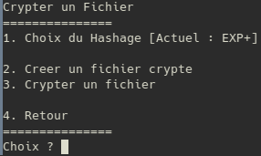
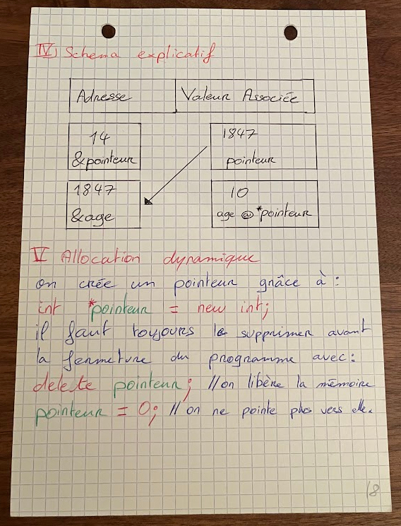

You’ve stumbled across my little corner of the web, where I’ve gathered all the projects I’ve poured my time and creativity into over the years.
Feel free to explore and take a glimpse into my journey as a maker, tinkerer, and lifelong learner.
Thanks for stopping by!
The day I decided to create this space
07/12/2024
Next year, I will turn 30. It feels like a big milestone. A turning point that has me reflecting on how I’ve spent my time.
Looking back, one constant thread through my life has been the countless hours spent in front of a computer.
It’s not just about the time; it’s about what that time gave me.
From the moment I first tinkered with a program or scribbled ideas for a new project, the computer became more than a tool—it was my creative canvas.
Over the years, I’ve poured my curiosity, passion, and countless late nights into projects of all kinds.
Some were small experiments, others grew into something I was truly proud of. All of them, though, were stepping stones that shaped my journey.
Now, as I reach this milestone, I feel compelled to look back at those projects, starting from the very first one.
By sharing these projects, I’m creating a record for myself—a future reminder of where I began and how far I’ve come.
And maybe, just maybe, it will inspire someone else to look back at their own journey or start one of their own.
Let’s dig into the archives and rediscover the magic of creating.
Learning programming as a teenager... with C++ and cyphering
07/12/2024
It’s been a wild ride since the days when declaring a variable and assigning it felt like an insurmountable challenge.
Let’s throw it back to the very first day I learned programming.
I was in high school, the year 2011, and we had quite a lot of free time. While most kids spent their breaks playing outside, my friends and I chose a different path—we gathered in the school library to teach ourselves programming.
They decided to start with Java. At that age, with zero knowledge of any programming language, I couldn’t bring myself to be interested in it.
Instead, I began experimenting with something simpler: creating interactive prompts using the Windows Batch scripting language.

A good example of a very bad UI
After tinkering around for a while, I realized it was time to challenge myself further.
Around the same time, my friends had finished their metaphorical cup of coffee (finally),
and we all agreed to focus on a new deity of programming: C++.
We turned to a well-known French website called "Site du Zéro" created by Matthieu Nebra.
It was brilliantly written and provided a thorough introduction to C++ programming fundamentals.
I still remember summarizing the course on A5 cardboard notes, with 4-colour penballs.
Remarkably, I still have those notes in my office drawer to this day, like a “lucky charm” of sorts!

If only I was this dedicated at school at that time!
Armed with our newfound knowledge, my friends and I set out to write our very first program: a substitution cipher utility.
Looking back, it was hilariously bad, but it worked!
The project was a simple "choice menu" that, believe it or not, was incredibly inconvenient to use because it required a ridiculous number of inputs just to encrypt a file.
It used multiple encryption methods, all based on substitution.
One method swapped all the ASCII alphanumeric and special characters with integer values, which were written as 3-character sequences (yes, the output was three times bigger. I definitely wasn’t planning on encrypting my entire drive back then).
Other methods just replaced characters with random garbage symbols.
The real problem with the code, despite all the attention I paid in the C++ course, was that any complexity was handled using switch cases: one for each character supported by the method.
It was... not pretty. Just plain bad code. But, for the record, I’m oddly proud of it. I still have a copy tucked away in a private repository, mostly for the sake of nostalgia (and a bit of embarrassment).